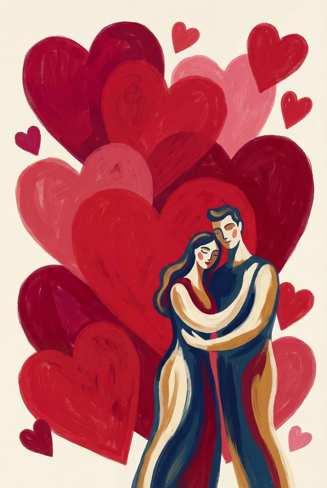

The most popular movie genres for watching according to a survey among viewers

Romance movies
Romance movies focus on the passion, emotions, and affectionate involvement of
maicharacters in a romantic relationship.
Plots usually revolve around courtship, obstacles to love, and the journey toward a "happily ever after"
or a bittersweet conclusion, often spanning comedy, drama, or fantasy subgenres.
Key Elements of the Romance Genre:
- Central Theme: The emotional, romantic, or sexual relationship between characters is the main driver of the plot.
- Conflict & Resolution: Relationships face challenges (e.g., class difference, misunderstanding, fate) that must be overcome.
- Atmosphere: Often focuses on emotional intimacy, idealized love, or "feel-good" scenarios.
Subgenres:
- Romantic Comedy (Rom-Com): Lighthearted, humorous storylines focusing on unlikely couples or misunderstandings.
- Romantic Drama: Focuses on deeper emotional themes and intense, sometimes tragic, love.
- Historical/Period Romance: Love stories set in specific past eras.
- Modern Romance: Explores dating in the modern world, including digital technology and complex relationships.
© 2026